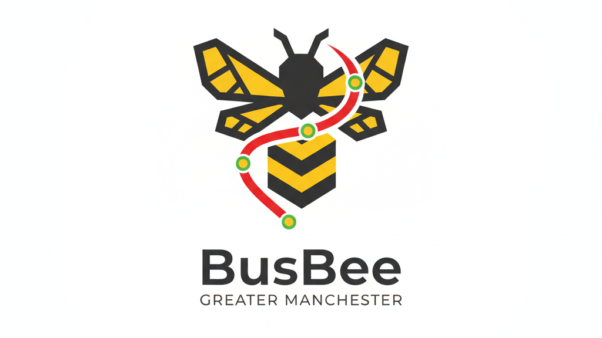

Software engineer focusing on tools and services to improve
engineering standards and governance within the Office for
National Statistics.
Specialised in Python, full-stack development and cloud
engineering, with experience across AWS, CI/CD platforms such as
Concourse CI, and modern development practices.
Undergraduate student studying for a BSc in Computing at the
University of South Wales.
02
Places I've worked
See my
LinkedIn for
more details. These are just summaries of my work experience.
Current role
Office for National Statistics
Software Engineer
December 2023 to present
Progressed from apprentice to junior to full
software engineer.
Contributed to and led projects within the Knowledge
Exchange Hub, formerly Digital Innovation.
Worked across the full stack and cloud infrastructure using
Python, JavaScript and AWS.
Mentored junior engineers and promoted good engineering
practices within the team.
Previous role
UK Windows and Doors Group Ltd
Junior Application Developer
September 2022 to October 2023
Worked on database management, reporting and business
intelligence solutions.
Gained experience in production SQL, databases and
reporting tools such as Power BI and SSRS.
Supported non-technical users through the help desk and
direct communication.
Dealt with non-technical system users via the help desk and
direct communication to resolve issues and provide support.
03
Things I've done
Projects
See my GitHub for
more details on my projects and contributions.Project thumbnail unavailable
AeroGIS
Integrated the Google Maps SDK and OpenFlights dataset to
build a spatial website displaying UK airports and flight
routes.
Explored API key security by injecting the key into webpages
instead of hardcoding it and enforcing domain restrictions
using the GCP console.

Project thumbnail unavailable
BusBee
Built a web-mapping application to visualise Greater
Manchester bus routes using Leaflet and OpenLayers.
Sourced and processed geospatial data in QGIS to be
integrated into the project.
Resolved compatibility issues during deployment to the
student webservers.
Hosted the project for external use using Vercel, including
DNS setup via Cloudflare.
Project thumbnail unavailable
BayView Hotel Booking System
Designed and implemented a hotel booking system using C# and
.NET WinForms, based on stakeholder specifications.
Introduced a test data generation suite within the tool to
generate random booking data.
Collaborated with other students to produce the system,
managing tasks, developer availability and roadmap planning
to ensure deadlines were met.
Established a build workflow via GitHub Actions to ensure
regressions were not introduced into the main environment.
Education
2022 to 2027
Currently studying
BSc (Hons) Computing
The University of South Wales
A five-year, part-time undergraduate degree under the
Network 75 Scheme.
Studies include:
C# development using .NET.
Web development using PHP, HTML5, CSS and JavaScript.
Exposure to content management systems such as Drupal
and Joomla.